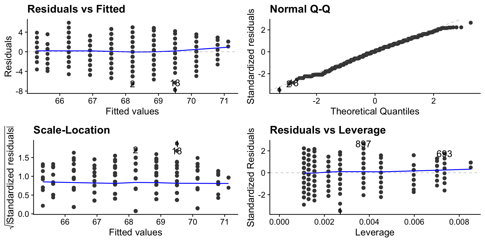
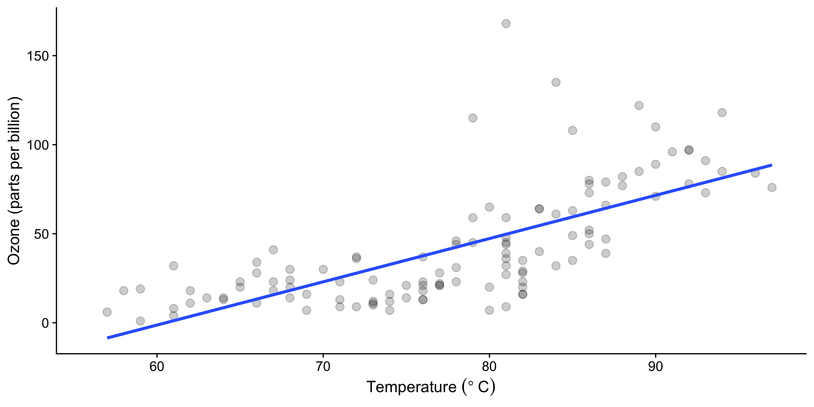
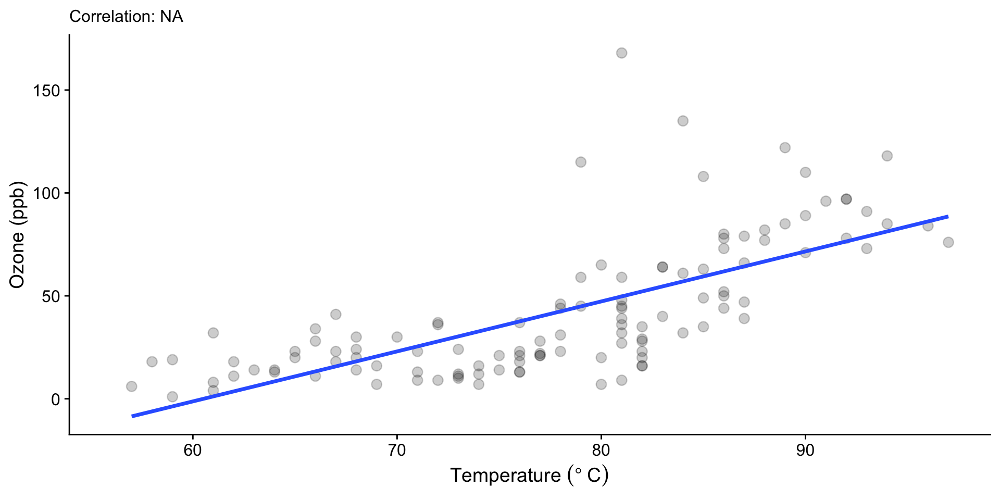

\(Y_i\), the response, is an observed value of the dependent variable.
\(\beta_0\), the constant, is the population intercept and is fixed.
\(\beta_1\) is the population slope parameter, and like \(\beta_0\), is also fixed.
\(\epsilon_i\) is the error associated with predictions of \(y_i\), and unlike \(\beta_0\) or \(\beta_1\), it is not fixed.
Because \(\epsilon_i\) is the only part of the equation that is not fixed, we associate it with the residual error (\(observed-predicted\)). It would also cover other aspects of error (e.g. sampling error, parallax error) but these are hard to discern.
Fitting the model
\(\color{royalblue}{\hat{y}_i}\) is the predicted value of \(y_i\):
We can find \(\beta_0\) and \(\beta_1\)analytically. We first find \(\beta_1\):
\[ \beta_1 = \frac{\sum_{i=1}^n (x_i - \bar{x})(y_i - \bar{y})}{\sum_{i=1}^n (x_i - \bar{x})^2} = \frac{Cov(x,y)}{Var(x)} = \frac{SS_{xy}}{SS_{xx}} \] And then substitute \(\beta_1\) into the equation for \(\beta_0\):
\[ \beta_0 = \bar{y} - \beta_1 \bar{x} \]
Numerical fitting
Computers use “random guesses” to find set of parameters that minimises objective function (SS) – more computationally efficient and applies beyond linear regression.
But there is a process similar to HATPC (hypothesis, assumptions, test, p-value, conclusions).
Define the hypothesis
\[H_0: \beta_1=0\]
\[H_1: \beta_1 \neq 0\]
The null model is a line with no slope (i.e. flat or horizontal) at the mean of the child height (\(\bar{y}\) = 68 inches).
Code
library(dplyr)null_model <- Galton %>%lm(child ~1, data = .) %>% broom::augment(Galton)lin_model <- Galton %>%lm(child ~ parent, data = .) %>% broom::augment(Galton)models <-bind_rows(null_model, lin_model) %>%mutate(model =rep(c("Null model", "SLR model"), each =nrow(Galton)))ggplot(data = models, aes(x = parent, y = child)) +geom_smooth(data =filter(models, model =="Null model"),method ="lm", se =FALSE, formula = y ~1, size =1 ) +geom_smooth(data =filter(models, model =="SLR model"),method ="lm", se =FALSE, formula = y ~ x, size =1 ) +geom_segment(aes(xend = parent, yend = .fitted),arrow =arrow(length =unit(0.1, "cm")),size =0.3, color ="darkgray" ) +geom_point(alpha = .2) +facet_wrap(~model) +xlab("Parent height (in)") +ylab("Child height (in)") +theme_classic()
Assumptions
The data must meet certain criteria, which we often call assumptions. They can be remembered using LINE:
Linearity. The relationship between \(y\) and \(x\) is linear.
Independence. The errors \(\epsilon\) are independent.
Normal. The errors \(\epsilon\) are normally distributed.
Equal Variance. At each value of \(x\), the variance of \(y\) is the same i.e. homoskedasticity, or constant variance.
Tip
All but the independence assumption can be assessed using diagnostic plots.
Assumptions with base R plot()
par(mfrow=c(2, 2)) # plots combined into 2x2 gridplot(fit)
Assumptions with ggfortify package and autoplot()
library(ggfortify)autoplot(fit)

Assumptions using performance
(Also provides a guide on what to check for in the assumption plot)
library(performance)performance::check_model(fit) # check all assumptionsperformance::check_model(fit, check =c("linearity", "qq", "homogeneity", "outliers")) # check specific assumptions
Assumption: Linearity
Prior knowledge and visual inspection comes into play. Does the relationship look approximately linear?
Code
ggplot(Galton, aes(x = parent, y = child)) +geom_point(alpha = .2, size =3) +geom_smooth(method ="lm", se =FALSE)
The linearity assumption can be checked again by looking at a plot of the residuals against \(x\) (i.e. parent height).
performance::check_model(fit, check ="linearity")
Where the green reference line is > 0, the model underestimates, and where it is < 0, it overestimates.
If the linearity assumption is violated, we should not be fitting a linear model – transform or use a nonlinear model.
Assumption: Independence
This assumption is addressed during experimental design, but issues like correlation between errors and patterns occurring due to time are possible if:
Time-series data, if the same subjects are sampled i.e. autocorrelation
Assumption: Normality
For a given value of \(x\), the residuals should be normally distributed. In a scatterplot of \(x\) and \(y\), the points would appear evenly distributed (linear and no fanning).
The mean of the residuals is 0 in linear regression
A standardised residual of 2 or above suggests the point is an outlier (far from the regression line)
Spread should be random i.e. no pattern (fanning, W), which indicates equal variances
Model Fit
How well does our fitted model represent the relationship between the variables?
ANOVA and linear regression
ANOVA is a variation of linear regression – both partition variance into sum of squares for residuals (variance explained) and sum of squares for error (variance not explained) aka the components of the F-statistic.
ANOVA Output
fit <-lm(child ~ parent, data = Galton)anova(fit)
Analysis of Variance Table
Response: child
Df Sum Sq Mean Sq F value Pr(>F)
parent 1 1236.9 1236.93 246.84 < 2.2e-16 ***
Residuals 926 4640.3 5.01
---
Signif. codes: 0 '***' 0.001 '**' 0.01 '*' 0.05 '.' 0.1 ' ' 1
parent Sum Sq: the variation that parent explains in the child variable
Residuals Mean Sq: variation (per degree of freedom) that the model does not explain
The F-value is the ratio, i.e. does parent explain enough variation in child to be considered significant?
\[\text{F-value} = \frac{\text{parent Sum Sq}}{\text{Residuals Mean Sq}} = \frac{1236.9}{5.01} = 246.84 \]
Regression Output
fit <-lm(child ~ parent, data = Galton)summary(fit)# F-statistic: 246.8 on 1 and 926 DF, p-value: < 2.2e-16
ANOVA and linear regression
ANOVA is a variation of linear regression – both partition variance into sum of squares for residuals (variance explained) and sum of squares for error (variance not explained) aka the components of the F-statistic.
ANOVA Output
The ANOVA suggests that the main effect of parent is statistically significant and large (F(1, 926) = 246.84, p < .001)
Regression Output
We fitted a linear model (estimated using OLS) to predict child with parent (formula: child ~ parent). The model explains a statistically significant and moderate proportion of variance (R2 = 0.21, F(1, 926) = 246.84, p < .001). Within this model, the effect of parent is statistically significant and positive (\(\beta_1\) = 0.65, 95% CI [0.57, 0.73], t(926) = 15.71, p < .001).
Note
For simple linear regression, the significance of the predictor (i.e. child) is the same as the model significance.
Interpret output
Model fit and predictions
Model fit
summary(fit)
Call:
lm(formula = child ~ parent, data = Galton)
Residuals:
Min 1Q Median 3Q Max
-7.8050 -1.3661 0.0487 1.6339 5.9264
Coefficients:
Estimate Std. Error t value Pr(>|t|)
(Intercept) 23.94153 2.81088 8.517 <2e-16 ***
parent 0.64629 0.04114 15.711 <2e-16 ***
---
Signif. codes: 0 '***' 0.001 '**' 0.01 '*' 0.05 '.' 0.1 ' ' 1
Residual standard error: 2.239 on 926 degrees of freedom
Multiple R-squared: 0.2105, Adjusted R-squared: 0.2096
F-statistic: 246.8 on 1 and 926 DF, p-value: < 2.2e-16
\[\widehat{child} = 23.9 + 0.65 \cdot parent\]
For every unit change in parent (i.e. 1 inch), we expect a 0.65 unit change in child.
How much variation is explained? R2 = 0.21 = 21%
Multiple R2: proportion of variance in the response variable explained by the model.
Adjusted R2: as above but adjusted for the number of predictors in the model.
For multiple linear regression
It only increases if the new term improves the model more than would be expected by chance
Always lower than multiple R2
Making predictions
What is the predicted child height for a parent height of 70 inches?
child <-23.9+0.65*70child
[1] 69.4
We use predict() to make predictions – it takes in the lm() model, recreates the equation and applies it to new data.
predict(fit, data.frame(parent =70)) # using 70 as this is the value we want to sub in and predict
1
69.18187
Note
How good is our prediction actually? What if we had more parents and children, would the equation still hold up? We cover this in Week 9.
Transformations
What if assumptions are not met, or we want to improve the model?
What if assumptions are not met?
Violations of…
Linearity can cause systematically wrong predictions
Homoskedasticity makes it difficult to estimate “true” standard deviation of errors (i.e. noisy estimates)
Normality can compromise inferences and hypothesis testing
How do we solve these problems?
Use less restrictive (but more complicated) models, e.g. generalised linear models, non-parametric techniques (ENVX3002)
Perform variance corrections (complicated)
Transform the response variable (\(y\)) to stabilise variance and correct normality
Transform the predictor variable (\(x\)) if issues still exist in the diagnostics
Note
We can also perform transformations to improve the model fit, but beware of overfitting – we want to make reasonable predictions, not fit the data!
Example: air quality
Daily air quality measurements in New York, May to September 1973.
str(airquality)
'data.frame': 153 obs. of 6 variables:
$ Ozone : int 41 36 12 18 NA 28 23 19 8 NA ...
$ Solar.R: int 190 118 149 313 NA NA 299 99 19 194 ...
$ Wind : num 7.4 8 12.6 11.5 14.3 14.9 8.6 13.8 20.1 8.6 ...
$ Temp : int 67 72 74 62 56 66 65 59 61 69 ...
$ Month : int 5 5 5 5 5 5 5 5 5 5 ...
$ Day : int 1 2 3 4 5 6 7 8 9 10 ...
We start with one variable: is ozone concentration influenced by temperature?
Code
ggplot(airquality, aes(x = Temp, y = Ozone)) +geom_point(alpha = .2, size =3) +labs(x =expression("Temperature " ( degree~C)), y ="Ozone (parts per billion)") +geom_smooth(method ="lm", se =FALSE)

Assumption checks
fit <-lm(Ozone ~ Temp, data = airquality)performance::check_model(fit, check =c("linearity", "qq", "homogeneity", "outliers")) # check specific assumptions
Is a simple linear model appropriate? Depends on your threshold for what is acceptable.
Backtransforming – FYI
A log transformation (natural or a base) is relatively easy to back-transform.
\[\widehat{log(Ozone)}=\color{royalblue}{-1.8380 + 0.0675 \times Temp}\]\[\widehat{Ozone}=e^{-1.8380 + 0.0675 \times Temp}=e^{-1.8380} \times e^{0.0675 \times Temp}\] But given we are focused on a 1-unit change of Temp, \(\widehat{Ozone}\) changes by \(e^{0.0675} = 1.07\)times.
An increase of \(x\) by 1 unit corresponds to a \(\beta_1\) unit increase in \(log(Y)\)
An increase of \(x\) by 1 unit corresponds to approximately a \(\beta_1 \times 100\%\) increase in \(Y\)
Linear-log: \(Y=\beta_0+\beta_1log(x)\)
An increase of \(1\%\) in \(x\) corresponds to a \(\frac{\beta_1}{100}\) increase in \(Y\)
Log-log: \(Log(Y)=\beta_0+\beta_1log(x)\)
An increase of \(1\%\) in \(x\) corresponds to a \(\beta_1\%\) increase in \(Y\)
Percent change with \(ln\) transformation – FYI
Interpreting as a percent change can be more meaningful - it can be done with any log transformation (substitute \(e\) below for 10 or any other base), but the quick approximation only works with natural log transformations.
If \(y\) has been transformed with a natural log (log(y)), for a one-unit increase in \(x\) the percent change in \(y\) (not log(y)) is calculated with:
\[\Delta y \% = 100 \cdot (e^{\beta_1}-1)\]
If \(\beta_1\) is small (i.e. \(-0.25 < \beta_1 < 0.25\)), then: \(e^{\beta_1} \approx 1 + \beta_1\). So \(\Delta y \% \approx 100 \cdot \beta_1\).
β
Exact \((e^{\beta} - 1)\)%
Approximate \(100 \cdot \beta\)
-0.25
-22.13
-25
-0.1
-9.52
-10
0.01
1.01
1
0.1
10.52
10
0.25
28.41
25
0.5
64.87
50
2
638.91
200
\(y\) transformed: a one-unit increase in \(x\) is approximately a \(\beta_1\)% change in \(y\).
\(x\) transformed: a 1% increase in \(x\) is approximately a \(0.01 \cdot \beta_1\) change in \(y\).
Both \(x\) and \(y\) transformed: a 1% increase in x is approximately a \(\beta_1\)% change in y.
Transforming Ozone
Let’s transform Ozone using the natural log (log()).
fit_log <-lm(log(Ozone) ~ Temp, data = airquality)
Before
Code
ggplot(airquality, aes(x = Temp, y = Ozone)) +geom_point(alpha = .2, size =3) +labs(x =expression("Temperature " ( degree~C)), y ="Ozone (ppb)") +geom_smooth(method ="lm", se =FALSE) +labs(subtitle =paste("Correlation:", round(cor(airquality$Temp, airquality$Ozone), 2)))

After
Code
ggplot(airquality, aes(x = Temp, y =log(Ozone))) +geom_point(alpha = .2, size =3) +labs(x =expression("Temperature " ( degree~C)), y ="log(Ozone) (ppb)") +geom_smooth(method ="lm", se =FALSE) +labs(subtitle =paste("Correlation:", round(cor(airquality$Temp, log(airquality$Ozone)), 2)))
performance::check_model(multi_fit, check =c("linearity", "qq", "homogeneity", "outliers")) # check specific assumptions
There is one additional assumption for multiple linear regression. Collinearity is when two or more predictors are very highly correlated. If the predictors are basically identical, the model cannot distinguish how much variability each explains. (Correlations in previous slides look fine).
Hypothesis
For multiple linear regression, there are two hypothesis tests:
Individual predictors, where the significance of each predictor is tested via t-tests
\[H_0: \beta_k = 0\]\[H_1: \beta_k \neq 0\]
The overall model, which is tested with an F-test (to get F-stat). \(H_0\) is an intercept-only model (i.e. the mean), so if at least one predictor is useful, the model is better than the intercept-only model.
\[H_0: \beta_1 = \beta_2 = ... = \beta_k = 0\]\[H_1: \text{At least one } \beta_k \neq 0\]
Model Fit
summary(multi_fit)
Call:
lm(formula = log(Ozone) ~ Temp + Solar.R + Wind, data = airquality)
Residuals:
Min 1Q Median 3Q Max
-2.06193 -0.29970 -0.00231 0.30756 1.23578
Coefficients:
Estimate Std. Error t value Pr(>|t|)
(Intercept) -0.2621323 0.5535669 -0.474 0.636798
Temp 0.0491711 0.0060875 8.077 1.07e-12 ***
Solar.R 0.0025152 0.0005567 4.518 1.62e-05 ***
Wind -0.0615625 0.0157130 -3.918 0.000158 ***
---
Signif. codes: 0 '***' 0.001 '**' 0.01 '*' 0.05 '.' 0.1 ' ' 1
Residual standard error: 0.5086 on 107 degrees of freedom
(42 observations deleted due to missingness)
Multiple R-squared: 0.6644, Adjusted R-squared: 0.655
F-statistic: 70.62 on 3 and 107 DF, p-value: < 2.2e-16